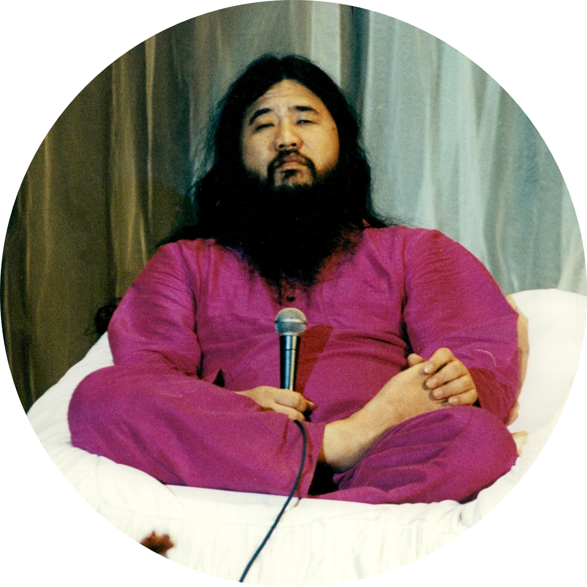

*Wagakimi Shoko Asahara*
*1955-2018*
Varuna which means Seas and sky in the Vedas is a sect that represent the fluidity and clearance of the mind meaning that we humans must learn how to compromise or accept
the situations that occur around us. The sect teaches us to be as fuild as water which will fit into anything you pour and take its form and be have a mind as clear as the blue sky that we and not be clouded by our guilt and regret. fluidity and clearance
is the way to attonement
It is very difficult to master the concepts of having a mind as clear as a blue sky and fluidity of water but never impossible. There are many members who struggle in this sector but they do succeed in the end. The main principles of this sect are
1. Patience
2. Meditation
3. Yoga asanas
4. Let the thoughts flow
5. Rejection must be minimal in life
6. Do not be scared of your actions
7. Natural psychedelics are a major help
8. Acceptance
this can be a mammoth task but the end results will be the most ejoyed by the user